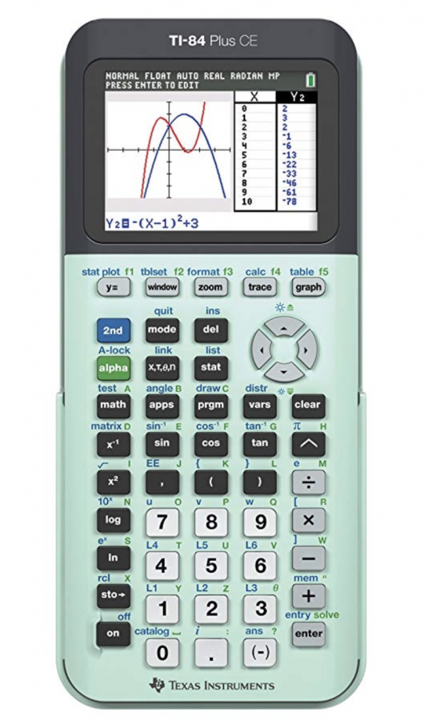

Home Project Tricks&Tips Formatting Misc.
Coding with the calculator 
Coding with the TI-84 Calculator can be really useful for making complex equations simpler and less of a pain. It's pretty helpful so here is a site to help.
Terms to learn
- If- performs an action of a condition is true
- Then- follows the if statement is the condition is 2 or more lines or contains an else statement
- Else- performs an if statement if the condition is false
- For- performs a function for a range of numbers
- While- performs an action until something meets a condition
- Lbl- bookmarks a part of the code for use somewhere else
- Goto- Goes to one of the bookmarks
- Prompt- Allows the user to input something and stores it to a variable for later use
- Disp- Displays the output information

- And- performs an operation if multiple conditions are true
- Or- performs an operation if one of multiple cconditions are true
- Xor- performs an operation if one of two conditions are true, but not both
- Not- performs an operation if the condition(s) are not true
For a complete list of commands go
here